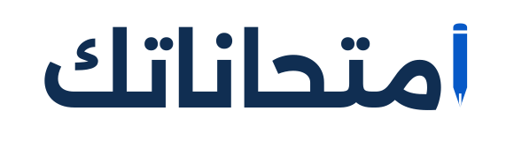
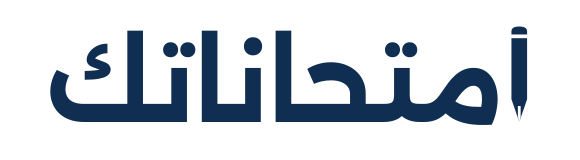
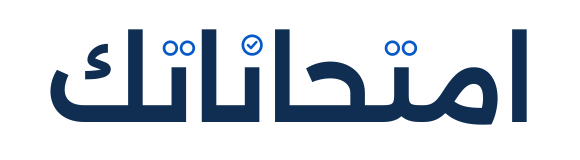
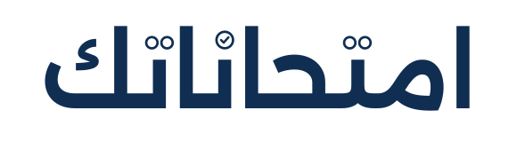

٣ اتجاهات أصلية قابلة للتطوير · SVG
علامة الصح بتحلّ مكان الجزء الداخلي من الكاف، وتبقى من تكوين الحرف نفسه.

أول ألف في الاسم بيتحوّل لقلم، وسنّه يوصل لنفس خطّ الحروف.



نقط التاء والنون بتتحوّل لدوائر اختيار، وإجابة واحدة متحددة بعلامة صح.


